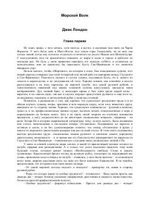

МВDengizda halokatga uchragan yigitning shafqatsiz kapitan qo'lidagi sarguzashtlari.
Jek Londonning ushbu mashhur romani dengiz safari paytida kema halokatiga uchragan adabiyotshunos Xamfri Van-Weydenning taqdiri haqida hikoya qiladi. U qo'rqinchli kapitan Volf Larsen boshqaradigan kema kapitanining qo'liga tushib qoladi va insoniy tabiatning qorong'i qirralari bilan yuzma-yuz keladi. Asar inson irodasi, kurash va hayot mazmuni haqidagi fojiali va qiziqarli voqealarga boy.